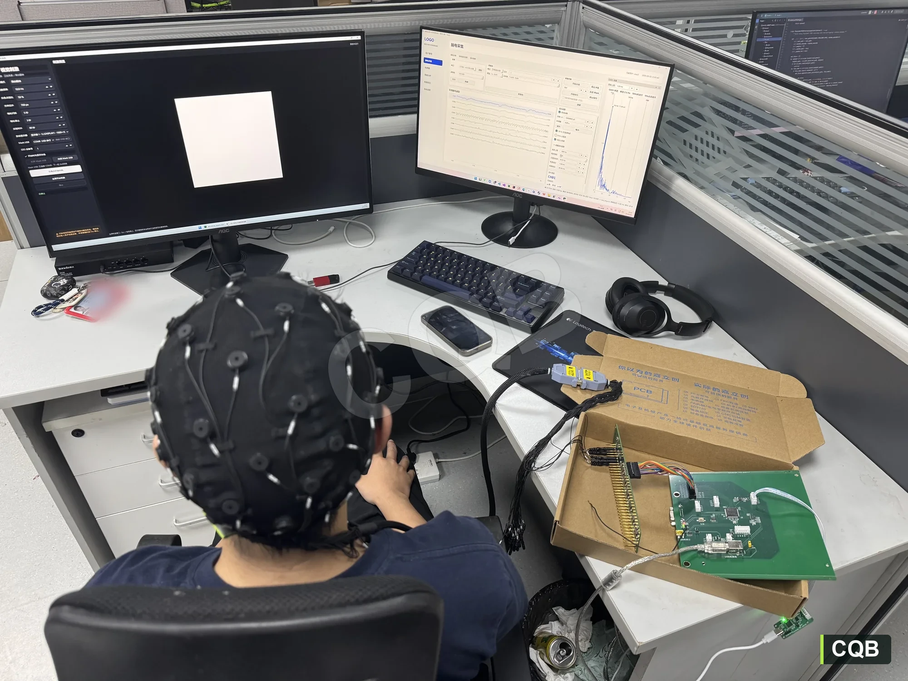

陈庆标 · 项目作品集 / EMBEDDED SYSTEMS
从脑电采集，
到经颅电刺激。
专注神经工程设备的嵌入式软硬件研发。从原理图与 PCB、固件与通信，到整机联调和实验验证，记录两套设备的落地过程。
- 原理图 / PCB
- FreeRTOS
- 驱动与通信
- 实验验证

HUMAN EEG TEST
01 / 实验现场
刺激显示、脑电采集与实时波形监测
EEG / SIGNAL ILLUSTRATION波形示意
01 / EEG ACQUISITION · 2025.12—2026.06
64 通道高密度脑电
采集与多设备协同平台
- 嵌入式固件
- 模拟采集与主控 PCB
- 系统联调
项目背景
面向原有脑电产品升级，以及脑机接口与神经调控需求，研发 64 通道高密度脑电采集设备。
连接脑电采集、外部触发与智能终端，为神经意图解码和闭环控制提供数据支撑。
核心采集指标
工程落地成果
83 μs ± 2 μs
CAN FD 触发延迟
USB 上传最高 12.5 Mbit/s，项目测试中未观察到丢包。
1,000 次
固件升级测试
CAN FD IAP 配合 A/B 应用区、厂家恢复区及双备份启动状态，实现校验、回滚与恢复。
5%
硬件成本降至原方案的 5%
完成产品替代，硬件成本约 3,000 元；空闲低功耗策略使整机功耗从 1.8 W 降至 0.76 W。
系统链路
从采集到分析
- 01头皮电极
- 02采集硬件
- 03事件同步
- 04范式实验
- 05信号分析
01
HARDWARE & FIRMWARE
硬件与固件设计
从 PCB 到固件，
构建完整脑电采集链路。
基于 ADS1299 与 STM32H743 构建脑电下位机，完成四层 PCB 设计、PCBA 打样，以及采集驱动、数据处理和设备控制固件开发。
ADS1299 菊花链采集板
连接多通道电极，通过 ADS1299 菊花链实现同步采样，经 SPI 将脑电数据送入数字处理板。
STM32H743 数字处理板
以 STM32H743 最小系统为核心，连接模拟采集板，集成 USB 2.0 HS、CAN FD、UART 接口及板载电源电路。
STM32H743 / FreeRTOS
固件设计
围绕实时采集、数据处理与设备管理，打通从底层驱动到上位机的数据链路。
- 01 / 采集驱动
EXTI + SPI + DMA
响应采样中断，读取 ADS1299 菊花链数据。
- 02 / 数据处理
数据解析与 IIR 滤波
解析多通道采样数据，完成数字滤波。
- 03 / 数据上传
USB 2.0 HS 传输
将处理后的脑电数据发送至上位机。
多设备同步控制
通过 CAN FD 协议实现节点寻址、广播控制与 Trigger 同步触发。
调试与日志
通过 UART + DMA + 空闲中断接收调试命令，结合带时间戳的日志定位异常。
固件升级与恢复
支持 CAN FD IAP 升级，结合 A/B 应用区、厂家恢复区和双备份启动状态，完成校验、回滚与故障恢复。
低功耗管理
协同 ADS1299 STANDBY、MCU Sleep 与 FreeRTOS Tickless，支持 CAN 中断唤醒。
01 / EEG
脑电实验验证
通过闭眼 Alpha 波和 SSVEP，验证 Oz、O1、O2 三个枕区通道的脑电响应。
EXPERIMENT SETUP
实验现场与采集流程
被试佩戴脑电帽观看刺激屏幕；另一屏实时检查多通道波形与频谱。硬件、范式和数据分析在同一实验链路中闭环验证。
- 实验前检查电极连接与信号质量
- 刺激程序与采集程序并行运行
- 依据 Marker 自动切分各实验阶段
闭眼 Alpha 波实验
01实验流程
分别记录睁眼和闭眼状态下的脑电，用事件标记定位记录时段，对比两种状态的 8–13 Hz Alpha 功率。
- 3 秒准备
- 6 秒睁眼或闭眼记录
- 2 秒休息
02实验结果分析
10.5 HzAlpha 峰频
+9.05 dB平均配对功率变化
3 / 3枕区通道均增强
- 频率对得上：闭眼后在约 10.5 Hz 出现明显峰值，位于 Alpha 频段。
- 变化一致：三个通道均有增强，差异持续存在于记录时段。
这组结果支持系统采集到了随睁闭眼状态变化的枕区 Alpha 响应。
03可以用来做什么
采集系统调试
检查能否记录到预期脑电响应，辅助比较电极布置与采集设置。
状态变化研究
为睁闭眼状态区分、静息态节律分析提供特征。
个体频率分析
提取个人 Alpha 峰频，为后续实验提供频段参考。
15 Hz SSVEP 实验
01实验流程
注视 15 Hz 周期变化的视觉目标，共进行 10 轮实验。用事件标记对齐刺激前、刺激中和刺激后的脑电。
- 2 秒注视
- 6 秒15 Hz 视觉刺激
- 3 秒休息
02实验结果分析
15 Hz目标频率响应增强
10 轮所示各轮 SNR 均为正
0.5–6 秒刺激期频谱分析窗口
- 频率对应：刺激期间出现 15 Hz 峰，与视觉刺激频率一致。
- 时间对应：时频图中的 15 Hz 增强覆盖刺激时段，所示各轮信噪比（SNR）均为正。
这组结果支持系统提取出了与刺激频率对应的诱发响应。
03可以用来做什么
诱发响应验证
检查目标频率提取，以及事件分段、频谱分析流程。
脑机接口输入
后续扩展多频目标，探索视觉键盘、菜单选择与设备指令。
解码算法研究
比较不同通道、时间窗与算法对频率识别的影响。
查看参考资料
原理参考：Alpha 生理验证研究 · SSVEP 脑机接口研究
01 / EEG · SYSTEM DEMO
从佩戴，到看见实时脑电。
视频记录了脑电帽、电极连接、采集硬件和上位机界面的实际运行过程。点击播放，查看完整系统演示。
- 输入
- 多通道头皮 EEG
- 同步
- 实验事件 Marker
- 输出
- 时域波形、频谱与 CSV
02 / TRANSCRANIAL ELECTRICAL STIMULATION · 2025.06—2025.11
高电流高频
经颅电刺激仪
负责内容：嵌入式软硬件研发 · 整机设计 · 驱动、监测与交互
项目背景
现有经颅电刺激产品的刺激电流与频率范围受限。面向高频、高电流神经调控研究需求，开发多通道恒流刺激系统，支持参数配置、多模式波形输出，以及电流、阻抗监测和异常保护。
研发成果 原型机开发与整机联调
<400 μs 急停响应
ADC + DMA 实时采集电流与负载阻抗，检测过流、开路等异常并快速切断输出。
约 1,200 元 / 套
独立完成整机原理图、四层 PCB、PCBA 打样及联调，形成可运行原型机。
9.8 W → 0.7 W
非刺激状态关闭 DDS 与外围模拟电路电源，进入 Sleep；UART 中断唤醒延迟 79 μs。
上述工程指标及“已投入临床实验使用”的项目进展来自个人履历；本页展示设备研发成果，未展示临床疗效结论。
02
STIMULATION HARDWARE & VALIDATION
STM32F103 · FREERTOS · AD9959
波形输出、实时监测，
在一台设备中协同。
基于 STM32F103 与 FreeRTOS 完成设备控制，驱动 AD9959 产生多通道波形，通过迪文串口屏完成参数交互和状态显示。
- 多通道输出
- 开发 AD9959 驱动，将刺激参数换算为 DDS 控制字，实现四通道、多模式波形控制。
- 监测与保护
- 采集输出电流和负载阻抗，联动异常检测与快速输出切断。
- 人机交互
- 完成串口屏通信协议及界面控制，支持参数下发、电流与阻抗显示、异常告警。
- 样机应用
- 完成原型机研发与联调，并据项目履历投入临床实验使用。
02 / STIMULATION · SYSTEM DEMO
查看原型机
实际运行。
从硬件实物到设备操作，视频记录经颅电刺激系统的实机演示过程。